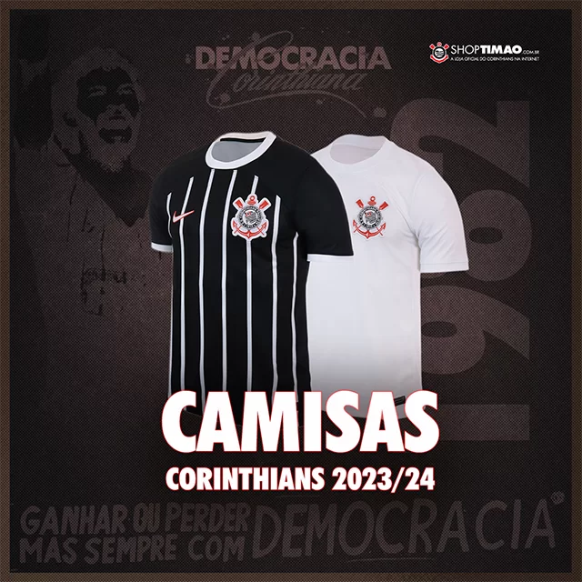

Nova camiseta corinthians 23/24
Celebre os 40 anos de um movimento que ajudou a moldar a trajetória política do Brasil com a Camisa Corinthians I 23/24. Encabeçado por jogadores como Wladimir, Sócrates e Casagrande, a Democracia Corinthiana deu voz de escolha para todos do clube, desde roupeiro, jogadores, comissão técnica e diretoria. Isso em um país onde havia um duro regime ditatorial. Inspirada no uniforme de 83, essa camisa do Corinthians masculina eterniza um dos maiores momentos do clube e relembra que a luta pela democracia é essencial e constante.
